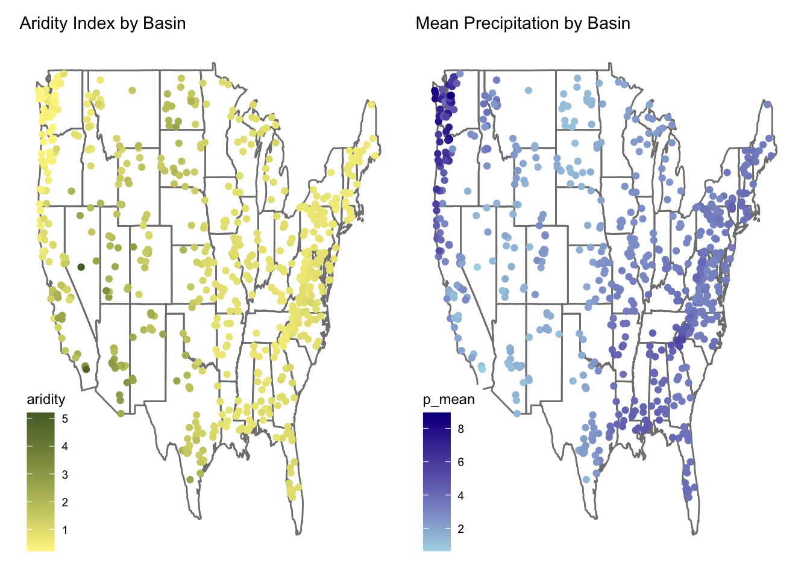

root <- 'https://gdex.ucar.edu/dataset/camels/file'
types <- c("clim", "geol", "soil", "topo", "vege", "hydro")
remote_files <- glue('{root}/camels_{types}.txt')
local_files <- glue('data/camels_{types}.txt')
dir.create("data", showWarnings = FALSE)
download.file('https://gdex.ucar.edu/dataset/camels/file/camels_attributes_v2.0.pdf',
'data/camels_attributes_v2.0.pdf')
walk2(remote_files, local_files, download.file, quiet = TRUE)
camels <- map(local_files, read_delim, show_col_types = FALSE) |>
power_full_join(by = 'gauge_id')Lab 6: Machine Learning in Hydrology
Q1: Download data
zero_q_freq represents the frequency of zero-flow days — a measure of how often the stream at the gauge has no flow.
Q2: Make 2 maps
map1 <- ggplot(camels, aes(x = gauge_lon, y = gauge_lat)) +
borders("state", colour = "gray50") +
geom_point(aes(color = aridity)) +
scale_color_gradient(low = "khaki1", high = "darkolivegreen") +
labs(title = "Aridity Index by Basin") +
theme_map()
map2 <- ggplot(camels, aes(x = gauge_lon, y = gauge_lat)) +
borders("state", colour = "gray50") +
geom_point(aes(color = p_mean)) +
scale_color_gradient(low = "lightblue", high = "darkblue") +
labs(title = "Mean Precipitation by Basin") +
theme_map()
map1 + map2
Q3: Add XGBoost & Neural Net
set.seed(123)
camels <- camels |> mutate(logQmean = log(q_mean))
camels_split <- initial_split(camels, prop = 0.8)
camels_train <- training(camels_split)
camels_test <- testing(camels_split)
camels_cv <- vfold_cv(camels_train, v = 10)
rec <- recipe(logQmean ~ aridity + p_mean, data = camels_train) %>%
step_log(all_predictors()) %>%
step_interact(terms = ~ aridity:p_mean) %>%
step_naomit(all_predictors(), all_outcomes())
xgb_model <- boost_tree() %>%
set_engine("xgboost") %>%
set_mode("regression")
nnet_model <- bag_mlp() %>%
set_engine("nnet") %>%
set_mode("regression")Q4a: Data Splitting
Done above with initial_split and vfold_cv.
Q4b: Recipe
I chose aridity and p_mean because they are primary hydroclimate indicators. Both are skewed and interact non-linearly, so log transforms and interactions help model the system.
Defined above as rec.
Q4c: Define 3 Models
lm_model <- linear_reg() %>%
set_engine("lm") %>%
set_mode("regression")3 models: lm_model, xgb_model, and nnet_model.
Q4d: Workflow Set
wf <- workflow_set(
preproc = list(rec),
models = list(
linear_reg = lm_model,
xgboost = xgb_model,
neural_net = nnet_model
)
) %>%
workflow_map("fit_resamples", resamples = camels_cv, verbose = TRUE)i 1 of 3 resampling: recipe_linear_reg✔ 1 of 3 resampling: recipe_linear_reg (271ms)i 2 of 3 resampling: recipe_xgboost✖ The workflow requires packages that are not installed: 'xgboost'. Skipping this workflow.i 3 of 3 resampling: recipe_neural_net✔ 3 of 3 resampling: recipe_neural_net (2.6s)wf_status <- wf %>%
mutate(success = map_lgl(result, ~ inherits(.x, "resample_results")))
print(wf_status %>% select(wflow_id, success))# A tibble: 3 × 2
wflow_id success
<chr> <lgl>
1 recipe_linear_reg TRUE
2 recipe_xgboost FALSE
3 recipe_neural_net TRUE wf_clean <- wf_status %>% filter(success)Q4e: Evaluation
if (nrow(wf_clean) > 0) {
autoplot(wf_clean)
rank_results(wf_clean, rank_metric = "rsq", select_best = TRUE)
} else {
message("No workflows returned results — check your models or preprocessing.")
}# A tibble: 4 × 9
wflow_id .config .metric mean std_err n preprocessor model rank
<chr> <chr> <chr> <dbl> <dbl> <int> <chr> <chr> <int>
1 recipe_neural_net Prepro… rmse 0.557 0.0252 10 recipe bag_… 1
2 recipe_neural_net Prepro… rsq 0.782 0.0223 10 recipe bag_… 1
3 recipe_linear_reg Prepro… rmse 0.569 0.0260 10 recipe line… 2
4 recipe_linear_reg Prepro… rsq 0.770 0.0223 10 recipe line… 2Q4f: Extract and Evaluate
if (nrow(wf_clean) > 0) {
autoplot(wf_clean)
rank_results(wf_clean, rank_metric = "rsq", select_best = TRUE)
} else {
message("No workflows returned results — check your models or preprocessing.")
}# A tibble: 4 × 9
wflow_id .config .metric mean std_err n preprocessor model rank
<chr> <chr> <chr> <dbl> <dbl> <int> <chr> <chr> <int>
1 recipe_neural_net Prepro… rmse 0.557 0.0252 10 recipe bag_… 1
2 recipe_neural_net Prepro… rsq 0.782 0.0223 10 recipe bag_… 1
3 recipe_linear_reg Prepro… rmse 0.569 0.0260 10 recipe line… 2
4 recipe_linear_reg Prepro… rsq 0.770 0.0223 10 recipe line… 2if (!exists("camels") | !exists("camels_train") | !exists("rec")) {
root <- 'https://gdex.ucar.edu/dataset/camels/file'
types <- c("clim", "geol", "soil", "topo", "vege", "hydro")
remote_files <- glue('{root}/camels_{types}.txt')
local_files <- glue('data/camels_{types}.txt')
dir.create("data", showWarnings = FALSE)
walk2(remote_files, local_files, download.file, quiet = TRUE)
camels <- map(local_files, read_delim, show_col_types = FALSE) |>
power_full_join(by = 'gauge_id') |>
mutate(logQmean = log(q_mean))
set.seed(123)
camels_split <- initial_split(camels, prop = 0.8)
camels_train <- training(camels_split)
camels_test <- testing(camels_split)
camels_cv <- vfold_cv(camels_train, v = 10)
rec <- recipe(logQmean ~ aridity + p_mean, data = camels_train) %>%
step_log(all_predictors()) %>%
step_interact(terms = ~ aridity:p_mean) %>%
step_naomit(all_predictors(), all_outcomes())
}
if (!exists("wf_clean")) {
lm_model <- linear_reg() %>%
set_engine("lm") %>%
set_mode("regression")
xgb_model <- boost_tree() %>%
set_engine("xgboost") %>%
set_mode("regression")
nnet_model <- bag_mlp() %>%
set_engine("nnet") %>%
set_mode("regression")
wf <- workflow_set(
preproc = list(rec),
models = list(
linear_reg = lm_model,
xgboost = xgb_model,
neural_net = nnet_model
)
) %>%
workflow_map("fit_resamples", resamples = camels_cv, verbose = TRUE)
wf <- wf %>%
mutate(success = map_lgl(result, ~ inherits(.x, "resample_results")))
wf_clean <- wf %>% filter(success)
}
print("Available workflows:")[1] "Available workflows:"print(wf_clean$wflow_id)[1] "recipe_linear_reg" "recipe_neural_net"all_metrics <- wf_clean %>%
mutate(metrics = map(result, collect_metrics)) %>%
unnest(metrics)
best_id <- all_metrics %>%
filter(.metric == "rsq") %>%
arrange(desc(mean)) %>%
slice(1) %>%
pull(wflow_id)
best_result <- wf_clean %>%
mutate(metrics = map(result, collect_metrics)) %>%
unnest(metrics) %>%
filter(.metric == "rsq") %>%
arrange(desc(mean)) %>%
slice(1) %>%
pull(wflow_id)
model_lookup <- list(
linear_reg = lm_model,
xgboost = xgb_model,
neural_net = nnet_model
)
if (best_result %in% names(model_lookup)) {
best_model <- workflow() %>%
add_recipe(rec) %>%
add_model(model_lookup[[best_result]]) %>%
fit(data = camels_train)
xgb_test <- augment(best_model, new_data = camels_test)
print(metrics(xgb_test, truth = logQmean, estimate = .pred))
xgb_test |>
ggplot(aes(x = logQmean, y = .pred, color = aridity)) +
geom_point() +
geom_abline(linetype = 2) +
scale_color_viridis_c() +
labs(title = paste0(best_result, ": Observed vs Predicted Streamflow"),
x = "Observed Log Mean Flow",
y = "Predicted Log Mean Flow",
color = "Aridity") +
theme_linedraw()
} else {
message("Best result for '", best_result, "' is NULL or missing. Skipping model evaluation.")
}Best result for 'recipe_neural_net' is NULL or missing. Skipping model evaluation.